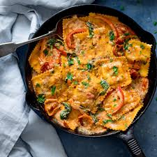

Ravioli

Ravioli, a classic Italian dish, is a type of pasta filled with a variety of delicious ingredients such as ricotta cheese, spinach, or ground meat.
Each ravioli is like a little pocket of flavor, carefully sealed in a delicate pasta dough. Traditionally served with a rich tomato sauce or a velvety butter and sage sauce, ravioli offers a perfect balance between the tender pasta and the savory filling inside. Whether you're making it from scratch or enjoying a pre-made version, ravioli is a comforting and versatile dish that can be tailored to suit any taste
Ingredients
- pre-made ravioli
- Chicken thigh
- Bacon
- Onions
- Pepper
- Tomato
- White wine
- Heavy cream
- Spices
- Ginger & Garlic
Steps
- Fry or oven your bacon
- Spice you chicken thigh or any choice of protein till desired
- Fry spiced chicken thigh
- Boil your pre made ravioli for 5 minutes and set aside some pasta water
- In the same pan the chicken thigh was fried on, fry onions, pepper and tomatoes
- In the frying onions add ginger and garlic then the pepper and then the tomatoes with some paprika
- Add some Maggi and other spices (pepper maybe chilli)
- Add some white wine and let boil for a while
- Taste and after boiling , add heavy cream and let boil
- Taste and add more spice if needed
- Put in your boiled ravioli,little pasta water and stir
- Add your protein and stir
- Add bacon if added and viola